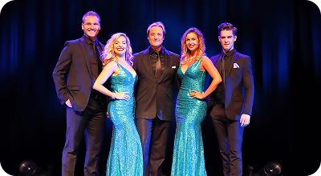
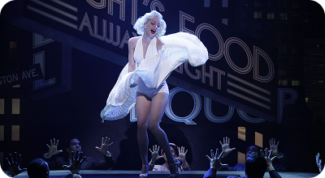
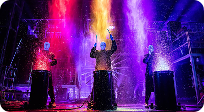

Зарубежные звезды эстрады
Зарубежные поп исполнители
Зарубежные рок исполнители
Зарубежная дискотека 80-90-х
Звезды итальянской эстрады
Зарубежные DJ
Зарубежные исполнители рэп, R&B

Зарубежные исполнители джаз, блюз
Зарубежные оперные исполнители
Зарубежные кавер-группы
Зарубежные двойники
Зарубежные шоу-группы
Концертное агентство «Большой город» оказывает услуги по организации участия зарубежных артистов в мероприятиях. Учитывая богатый опыт работы, мы гарантируем качество, приятные цены и оперативное решение всех вопросов. Для нас самое главное – сделать любое мероприятие незабываемым!
Выбор зарубежного артиста
Сегодня наше агентство готово предложить вам колоссальный выбор западных музыкантов и групп. Вы можете выбрать исполнителя любого жанра и направления. У нас большой выбор поп, рок, рэп исполнителей, звезд зарубежной дискотеки 80 и 90 годов, любимые и романтичные исполнители итальянской эстрады, популярные диджеи, лиричные исполнители блюза и джаза, а также невероятные шоу-группы. Каждый представитель из списка зарубежных артистов поможет сделать мероприятие ярким и незабываемым!
Со всеми предлагаемыми артистами у нас налажено долгосрочное и плодотворное сотрудничество. Поэтому, все вопросы мы можем решить максимально оперативно, а самое главное, качественно.
Участие зарубежной звезды в мероприятии
Наше агентство готово организовать для вас выступление любого зарубежного артиста. Представители американской и европейской сцены очень востребованы сегодня на мероприятиях. Цена за выступление зарубежной звезды на свадьбе, юбилее, корпоративе, складывается из следующих составляющих:
- гонорар за выступление;
- транспортные расходы по организации приезда артиста;
- расходы, которые связаны с нахождением артиста в России.
Цена за участие артиста в мероприятии зависит также от уровня его популярности , места проведения торжества, продолжительности выступления. Чтобы узнать, сколько будет стоить зарубежную звезду пригласить на мероприятие — обращайтесь в наше в агентство, и мы оперативно предоставим полный расчет.
Заказ зарубежной звезды
Наше агентство возьмет на себя решение всех вопросов по организации участия выбранной вами звезды. Мы не только предоставим выгодные условия участия артистов в торжестве, но и исполним на высшем уровне все условия бытового, технического райдеров звезды. Также наша команда готова организовать любое мероприятие «под ключ».
Заказать зарубежных артистов эстрады у нас просто. Обращайтесь — мы будем рады подарить яркий праздник и видеть вас в числе постоянных клиентов!